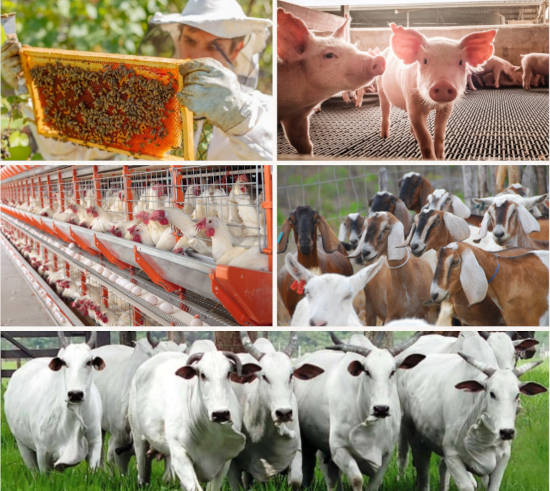

O que é zootecnia?
Zootecnia é a area das ciências agrárias, cuja graduação é adquirida por meio de faculdades, que possui como missão capacitar profissionais para trabalhar com o manejo de animais visando a sua produção, ou a produção de seus produtos, atravez da nutrição e alimentação, melhoramento genético, instalações adequadas, reprodução e bem estar animal, podendo estar atuando em propriedades e Fazendas, Empresas Rurais, Empresas de Pesquisas Estaduais e Federais, instituições de ensino, entre outras

O que faz um zootecnico?
- Maneja animais
- Planeja, realiza, e conduz pesquisas
- Realiza análises de rações
- Identificar valores nutritivos das rações
- Formular rações para diferentes animais
- Detectar problemas comportamentais nos animais
- Adaptar animais em diferentes climas
- Trazer bem estar aos animais

Atividades Zootecnicas
O zootecnico pode trabalhar em várias areas, estando em contato com diversos conhecimentos e animais diferentes, a seguir tem algumas atividades que um zootecnico deve saber e executar
Melhoramento Genético
Ação de promover a melhor genetica para uma determinada espécie de animal, seja paraaumentar a sua produção em uma determinada caracteristica, eliminar caracteristicas ruins da espécie como quantidade de gordura, ou melhorar a resistência a temperaturas, o zootecnista possui o papel de encontrar a espécie mais apropriada para isso e fazer o cruzamento entre estas espécies.
Nutrição
O zootecnista possui o papel de desenvolvimento de ração com maior teor nutritivo, fácil digestão do animal, forragens de maior qualidade para sistemas de pastagens extensivos, podem ser forragens com alto teor fibroso e nutritivo, crescimento rápido, resistência à temperatura, entre outras características, para poder habilitar as caracteristicas genéticas do animal, pois não importa se o animal possui boa genética, ele não irá possui boa produção se não for alimentado com rações ou forragens de boa qualidade, e com isso não será rentável a sua produção.
Pesquisa
Uma das áreas mais importantes da zootecnia, envolve a pesquisa de diversos fatores, técnicas e tecnologias a serem utilizadas, tendências de manejo dos animais, rações, forragens, entre outras, essa prática é de extrema importância pois é preciso estar atento a novos processos, pois isso faz ganhar um diferencial e aumenta a produção e rentabilidade do empreendimento, além que a utilização de técnicas e tecnologias passadas vão deixando de existir e serem viáveis, e também vão sendo consideradas um erro o seu uso por questões de segurança e também bem estar animal.
Saúde
O zootecnista deve estar consciente da estrutura dos animais, saber a sua biologia, e manter a saúde dos animais sempre alta, mantendo dietas balanceadas, bem estar, higiene no local e em nas pessoas que teram contato com os animais, entre outros fatores, para que os animais não adquiram doenças ou as pessoas que faram o manejo não adquiram doenças também, o que causa uma diminuição da produção animal, e possivelmente morte
Meio Ambiente
Conservar o meio ambiente é essencial para poder fazer da atividade algo sustentável, e podem levar a vários fatores, manutenção, conservação e uso do solo para o tipo de forragem que será utilizada, a quantidade de água que é utilizada para o mantimento dos animais, e nisso é necessário o conhecimento de diversas técnicas ambientais para poder transformar em uma produção sustentável, algumas delas sendo o controle de erosão do solo, uso da água, cobertura vegetal para poder amenizar a erosão, infiltrar água ter mais recurso hídrico, e ainda acarretar em maior ciclo de carbono.
Bem Estar
O bem estar animal é uma das tendências mais atuais, visando dar a melhor qualidade de vida possível para o animal enquanto ele estiver vivo, isso acarreta em uma maior produção, aumenta o conforto do animal, propicia uma maior saúde, e valoriza o trabalho do zootecnista e do proprietário, o que gera maior renda no geral com mais pessoas querendo consumir produtos que faça boas técnicas e deem uma vida digna ao animal.
